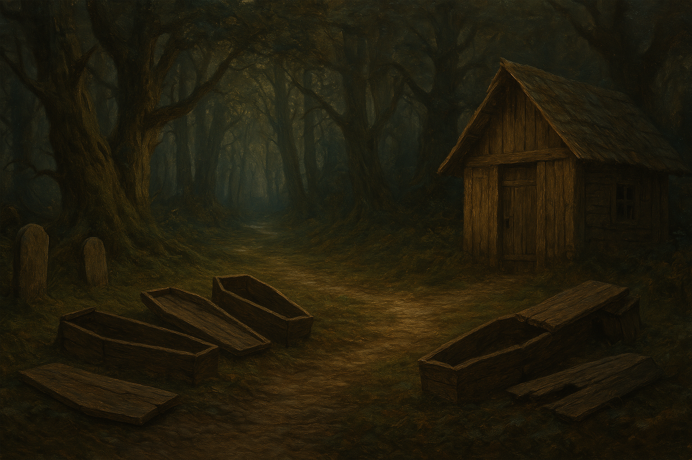

Chapter 2: The Siren's Cemetery
The Elite Bloodline

The Elite Bloodline
15049.03.17
雷亞和羅羅兩人決定先去附近的商店街逛一逛，他們和路人打聽之後，找到了三間甜點店。第一家很明顯是間連鎖糖果店，繽紛的色彩，商業化的設計，以及擠不進去的店鋪，整間店都是孩子們的吵鬧聲；第二家店看起來是雜貨店，外面有各種甜點；最後一家看起來十分破舊，但有時候最好吃的東西總會出現在這種地方。兩人最終先擠進去了第一家糖果店，Tweenie’s Sweeties，以秤重的方式買了兩袋糖果，要價十分昂貴。羅羅似乎發現老闆可能和他一樣，是個妖精。
接著，雷亞想起自己有抓小動物的捕獸夾，想去附近的森林抓隻小動物，透過動物溝通術，來打聽關於幽深林的事。於是兩人走到貝瑟頓側邊城門的樹林入口處架設陷阱。
因為時間不夠的關係，兩人回程後只去了最破舊的甜點店，Old Bill’s。在老闆的介紹下，他們試吃了一桶老闆自製的各色糖果，味道十分鮮甜可口，價錢也便宜到羅羅最終買了一大麻布袋的糖果背在身後，還比第一家店的一小袋還要便宜。
兩人接著回頭檢查捕獸夾，發現有一隻松鼠被夾在上面。聽到松鼠吱吱叫，雷亞使用動物溝通術，馬上聽見松鼠一連串的粗口。在雷亞嘗試溝通失敗後，他威嚇了松鼠，卻發現松鼠嚇暈了。於是他將松鼠先裝到自己的小袋子內，兩人決定去一趟鐵匠鋪換武器，以及去雜貨店補充物資，就到貝瑟頓的正門口和其他人會合。
經過一番討論，阿龍、毛毛和鑰決定先去昨晚相遇的酒館「吟遊詩人之歌」打聽關於幽深林的情報。一大早的酒館內客人很少，和前一晚的擁擠截然不同。老闆和他們聊過後，表示大家只知道幽深林很危險，不要進去，但裡面到底有什麼？為何危險？沒有人清楚。買了一些食糧後，阿龍詢問老闆是否有賣菸草。老闆自己從口袋中掏出一點自己在抽的菸草，分享給阿龍。只見阿龍從背包拿出一個不成比例的小的煙斗，嘗試使用。他和其他人說明，這是他爸爸留給他的東西，因此他很想要用用看。第一次抽菸草，控制不好的力道，不僅讓阿龍不斷咳嗽，吐出的煙也燻的其他人十分不舒服。離開前，冒險者們也問了老闆是否有懸賞令。他們有點懷疑身分不明的羅羅（到現在他們還不知道羅羅的名字）是否有可能是通緝犯，因此想確認看看。老闆拿出了一張懸賞令，上面有個大鬍子，但似乎這名大鬍子還沒有出現在貝瑟頓過。這個人很明顯和羅羅長得不一樣，因此冒險者們稍微放心了一點。
離開酒館後，他們依照酒館老闆的建議，來到附近的煙斗店 Smokey Smokey。這家店只有賣比較平價的煙斗，但阿龍還是看得很開心。購買煙斗後，老闆還給了他一張會員卡，表示這家店是連鎖店，到其他店都可以使用，會有會員的優惠價。冒險者們也向他詢問關於幽深林的消息，他並不知道，但也表示好奇。老闆和同行的毛毛和鑰答應，如果他們去了幽深林，回來以後告訴他那邊有什麼狀況，他會再給他們兩人各一張會員卡。毛毛也得到了許可，之後要和他拿他們用來製作煙斗的木頭原料。
三人花了一些時間，詢問到了附近一間魔法用品店，Mister Wizard’s Potions of Everything。走入巷弄中的店內，左右兩側都是玻璃櫥窗，放滿常見的生命藥水，但也不便宜。經過店內員工的介紹，擺在櫃檯前的事比較特別的藥水，顏色琳瑯滿目，但價錢都至少要 10 枚金幣以上。店員介紹了幾款，包含要價 15 金幣的黃色藥水，可以讓人身體發光一分鐘；要價 20 金幣的綠色毒液，可以用來塗在武器上、敵人皮膚上，或是讓人喝下去；要價 50 金幣的藍色藥水，可以讓人飛在空中五分鐘。最後，櫃檯後方還有一罐看起來用金色裝飾雕琢的藥水，要價 1000 金幣。根據店員的說明，喝下去以後可以跟一名你認識的人交換身份。冒險者們看了很心動，但最終還是決定先不花錢買這些。
最後，冒險者們來到正門口的衛兵站，和衛兵詢問懸賞令的事。公告欄上，除了賞金高達 1000 金幣的大鬍子外，還有一些其他的臉孔，但都和羅羅完全不像。底下兩排則是失蹤孩童的肖像，但有些已經過太久，孩子的長相大概不會是現在這樣了。而這些失蹤的孩子，有可能就是走失在幽深林中的。
冒險者們會合完成後，大家在城門口就地用午餐，同時羅羅也在大家的請求下做了個較為完整的自我介紹，大家得知他是個有一定歲數的妖精，而他的很多所作所為，都是因為一個神秘的「祂」的緣故。
午餐後，大家便動身前往幽深林。此時已經清醒的松鼠被安置到了鑰的推車內，在鑰的照顧下穩定許多，而他似乎也把鑰是為了夥伴，讓原本抓到他的雷亞有些失望。走入林中，光線與聲響逐漸消失，像是被下了咒一般。冒險者們緩步前進，四周安靜的像是生命不曾存在過一樣，直到他們聽見了遙遠的腳步聲。毛毛爬上樹，快速地跑到前方偵查，看見了兩名拿著火把的衛兵朝他們走來。這和在衛兵站打聽到的消息一致，幽深林除了固定來巡守的衛兵外，基本上不會有任何人進來。
冒險者們等到衛兵接近後，便和他們打聽消息，得知這條路沒有岔路，最深處即是「海妖墓園」，那裡有個給守墓人休息的小木屋。衛兵也透露他們因為年資較淺，被要求定期來幽深林巡守。
繼續往前數個小時，冒險者終於看見陰影在一處硬生生地斷開。對於這奇異的景象，冒險者們也感到十分緊張。阿龍往前走，踏出了陰影，接著他便聽見了嘎嘎作響的木板聲，在他眼前數個棺材開始翻開。
冒險者們進入了戰鬥，棺材內的骷髏一一爬出，部分冒險者們甚至在腦中聽見了美妙的歌聲，讓他們難以行動。在雷亞施放了雲霧術，限制了冒險者們和骷髏的視線範圍後，戰局才稍微被控制了下來。重傷的毛毛逃到了前方的小木屋內，發現骷髏的攻擊似乎打不到小木屋內，暫時可以得到一點時間休息。
最終，在阿龍、雷亞和毛毛的揮砍、羅羅的遠距離輸出，以及鑰適時輔助之下，骷髏們終於被打倒。冒險者們搜刮了戰場後，得到了數根完整且質地良好的骨頭，接著便走入了小木屋內休息。此時的天色也暗了。